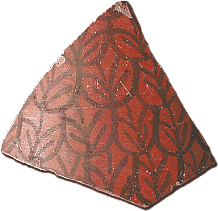

DK Area and Trench E |
|
DK Area was divided into six main sections where excavators worked. This was one of the largest areas excavated in the 1920s and 1930s. Over the years archaeologists have had different ideas about what types of buildings were located in this area.
Excavators thought that the northernmost part of the DK G section was a rubbish dump because the objects they found were mostly broken and mixed-up. This led them to think that somewhere in DK G may have been a city boundary, as a rubbish dump would probably have been located outside the city walls. 
A pot sherd from Mohenjo-daro The southern part of DK G section is divided by a massive wall. The excavators thought that this wall might have been part of a palace or important building because it was much bigger and stronger than the walls of ordinary homes. The area directly to the east of this palace or building was divided into small rooms. Some excavators thought these could have been rooms for servants. They also thought that a large open space nearby could have been either a private courtyard or a public gathering space. |